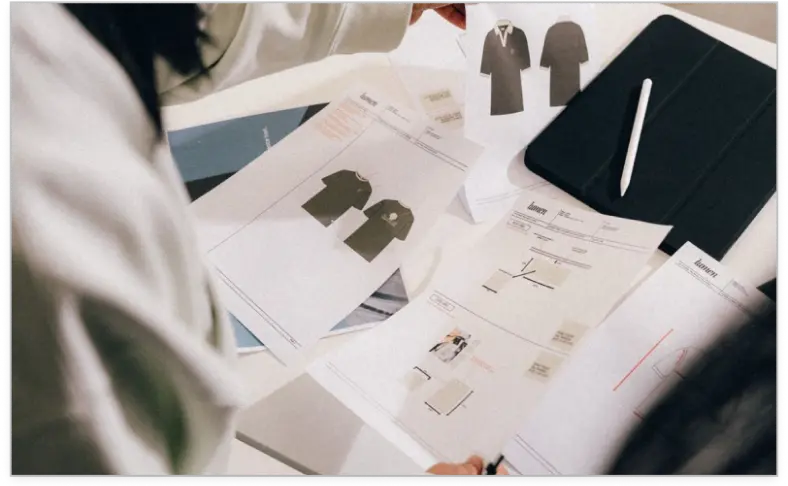
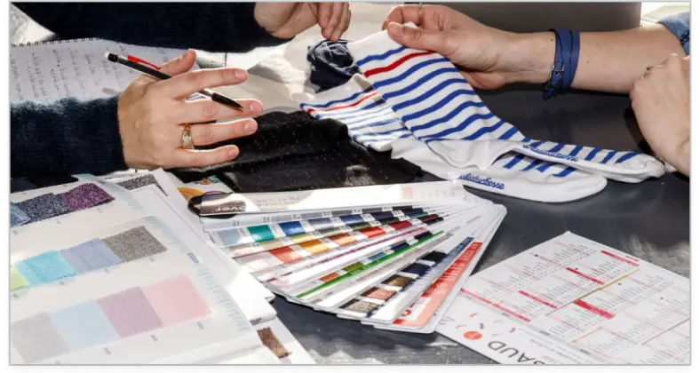
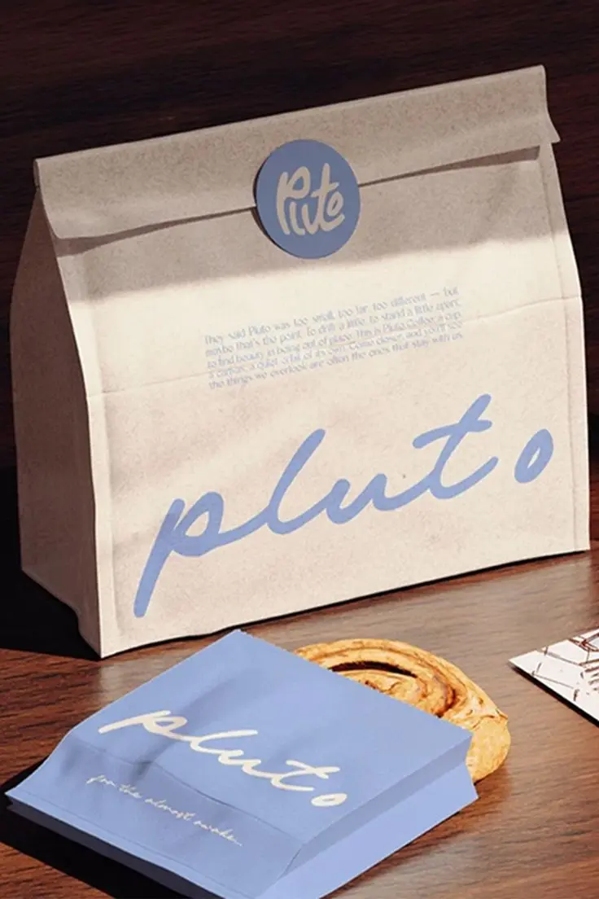
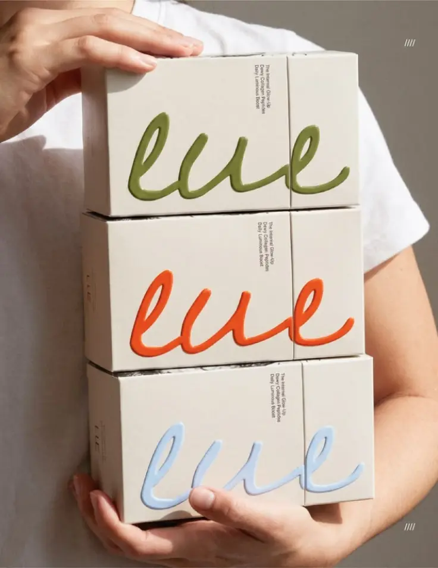

Understand
→We start with what you need — your product, priorities, requirements and where you want to go.
The right solution starts with the right partner.
TÓKI helps navigate suppliers, materials and possibilities — finding
the right
match for your product, requirements and ambitions.
We start with what you need — your product, priorities, requirements and where you want to go.
We explore suppliers, materials and production possibilities to find options that fit the challenge.
We compare capabilities, quality, cost and feasibility to help you make an informed decision.
We bring the right partners together and help build a clear path forward.
Finding the Right Fit
Sourcing is finding the right partner for the right challenge. TÓKI helps navigate suppliers, capabilities and materials to create connections that make sense for both the solution and the business behind it.



Aura — Packaging Design

Aura — Packaging Design

Aura — Packaging Design